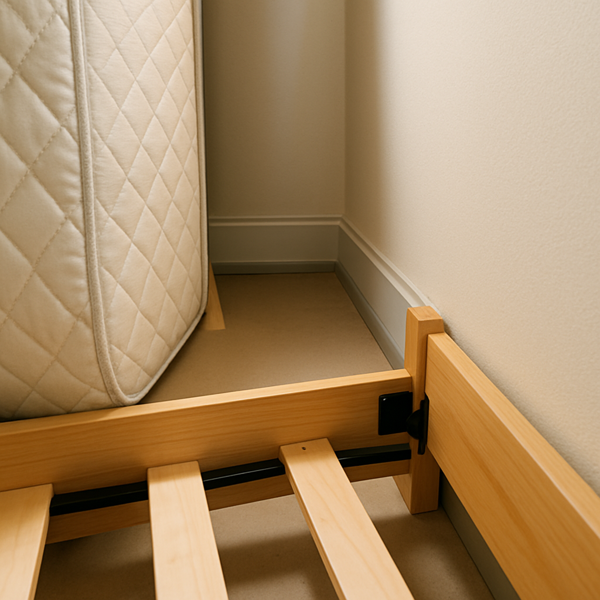
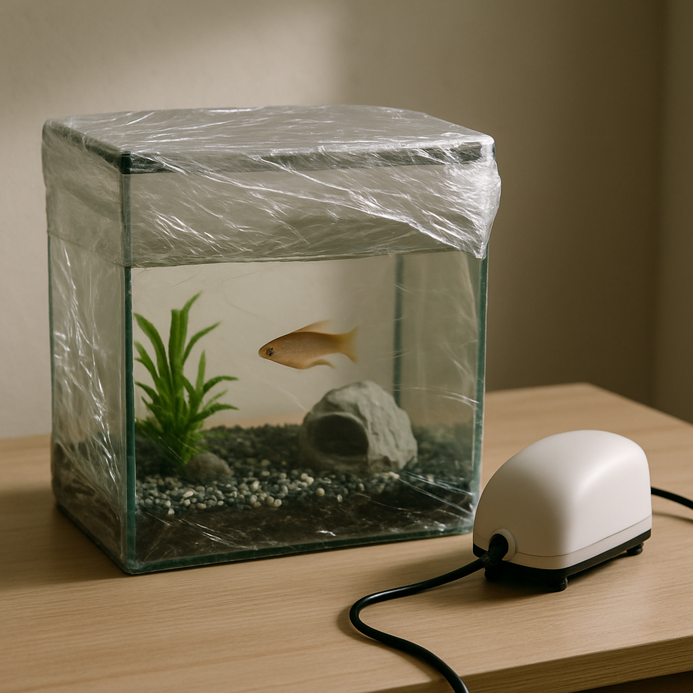

Как подготовить квартиру к обработке от клопов: подробная инструкция и советы
Введение: Почему подготовка так важна?
Появление клопов в доме — это всегда стресс и дискомфорт. Вы уже приняли верное решение, обратившись к профессионалам. Однако, чтобы дезинсекция прошла максимально эффективно и дала гарантированный результат, необходим один важный шаг: правильная подготовка квартиры.
Многие задаются вопросом: "А что, если я ничего не сделаю? Разве дезинсектор не может просто прийти и всё обработать?"
Профессиональная подготовка — это не просто уборка. Это создание условий, при которых яд достигнет каждой щели, где могут прятаться паразиты. Следуйте нашей подробной инструкции, чтобы обеспечить успех процедуры.
Подготовка к дезинсекции клопов: пошаговый план
Процесс подготовки можно разделить на несколько ключевых этапов. Начните за 1-2 дня до приезда специалиста.
Шаг 1: Генеральная уборка и расхламление
Первое и самое важное — это уборка перед обработкой от клопов. Чем меньше предметов будет на полу и открытых поверхностях, тем лучше.
| Что нужно сделать | Зачем это нужно |
|---|---|
| Пропылесосить пол, ковры, мягкую мебель, плинтусы. | Удалить видимых клопов, их яйца и экскременты. Сделать поверхности чистыми для лучшего сцепления препарата. |
| Провести влажную уборку пола и протереть пыль. | Убрать жир, грязь и пыль, которые могут снизить эффективность инсектицида. |
| Убрать все личные вещи с открытых полок, столов, подоконников. | Все, что не должно быть обработано (книги, документы, сувениры), должно быть убрано в герметичные пакеты или вынесено из помещения. |
| Снять со стен картины, постеры, настенные часы. | Клопы часто прячутся за этими предметами. Их снятие обеспечит доступ к стене. |
Шаг 2: Работа с одеждой и постельным бельем
Клопы любят прятаться в тканях. Этот этап требует особого внимания.
- Снимите все постельное белье, шторы, покрывала, чехлы с мягкой мебели.
- Постирайте их при максимально возможной температуре — не менее 60°C. Высокая температура убивает клопов и их яйца.
- Прогладьте постиранное белье и одежду утюгом с паром, уделяя особое внимание швам.
- Упакуйте чистые вещи в плотные полиэтиленовые пакеты и плотно завяжите. Эти пакеты можно оставить в квартире, но они должны быть герметичны.
- Освободите шкафы и комоды от одежды. Всю одежду, которую нельзя стирать при высокой температуре, также упакуйте в герметичные пакеты.
Шаг 3: Как подготовить мебель к обработке от клопов
Мебель — главное убежище клопов. Ваша задача — обеспечить специалисту максимальный доступ к местам их скопления.
- Отодвиньте всю мебель (шкафы, диваны, кровати) от стен на расстояние 10-15 см. Это позволит обработать плинтусы и задние стенки мебели.
- Разложите всю трансформируемую мебель: диваны, кресла-кровати, раскладушки. Они должны быть в полностью разобранном состоянии, чтобы дезинсектор мог обработать каркас, стыки и внутренние полости.
- Освободите внутренние ящики шкафов и комодов. Вещи из них упакуйте в пакеты (см. Шаг 2).
- Переверните матрасы и поставьте их вертикально, прислонив к стене.
Шаг 4: Продукты питания, посуда и техника
Химические препараты не должны контактировать с едой и посудой.
- Продукты питания: Уберите все продукты в холодильник, либо в плотно закрывающиеся контейнеры или герметичные пакеты.
- Посуда и кухонные принадлежности: Сложите всю посуду, столовые приборы и мелкую кухонную технику в пакеты или уберите в шкафы, которые не будут обрабатываться (например, навесные шкафы, если они плотно закрываются).
- Бытовая техника: Телевизоры, компьютеры, микроволновые печи, колонки — накройте плотной полиэтиленовой пленкой или вынесите из помещения.
Шаг 5: Аквариумы и домашние животные
Безопасность ваших питомцев — приоритет.
- Домашние животные: Кошки, собаки, птицы, грызуны — должны быть вывезены из квартиры на время обработки и проветривания (минимум на 4-6 часов).
- Аквариум: Отключите компрессор (подачу воздуха), плотно накройте аквариум пищевой пленкой или стеклом. Это необходимо, чтобы инсектицид не попал в воду.
Что делать во время и сразу после обработки
Специалист проведет обработку, которая займет от 30 минут до 1 часа, в зависимости от площади и степени заражения.
Правила безопасности во время работы
- Покиньте помещение. Находиться в квартире во время обработки строго запрещено.
- Не открывайте окна. Во время обработки и в течение времени экспозиции (2-3 часа после) окна должны быть закрыты.
Действия после обработки от клопов
После того как специалист закончит работу, необходимо выдержать время экспозиции, а затем провести следующие действия:
- Проветривание: Вернитесь в квартиру через 2-3 часа (или согласно рекомендациям дезинсектора). Откройте все окна и проветривайте помещение минимум 1-2 часа.
- Влажная уборка (частичная): Протрите только контактные поверхности (столешницы, ручки дверей, выключатели, подоконники) содовым раствором (3 ст. ложки соды на 1 литр воды). Это безопасно и удалит остатки препарата с тех мест, к которым вы прикасаетесь.
- Полная уборка: Не мойте плинтусы, стены, задние стенки мебели и пол в течение минимум 3-х недель. Оставшийся на этих поверхностях препарат будет создавать барьерный эффект и уничтожать клопов, которые вылупятся из яиц (а яйца устойчивы к большинству препаратов).
| Поверхность | Что делать после обработки | Срок |
|---|---|---|
| Контактные (столы, ручки, выключатели) | Протереть содовым раствором. | Сразу после проветривания |
| Неконтактные (плинтусы, стены, мебель) | Не мыть! Оставить для барьерного эффекта. | Минимум 3 недели |
| Постельное белье/одежда | Можно доставать из пакетов и использовать. | Сразу после проветривания |
Заключение: Гарантия успеха – это совместная работа
Правильная подготовка квартиры — это ваш вклад в быстрое и полное избавление от клопов. Следуя этой инструкции, вы не только облегчите работу специалисту, но и гарантируете, что обработка будет максимально эффективной.
Не откладывайте решение проблемы. Обращайтесь в СибДезОмск — мы используем только сертифицированные препараты и современные методы, чтобы вернуть вам спокойный сон и уверенность в чистоте вашего дома.
Готовы начать?
Позвоните нам прямо сейчас, чтобы назначить удобное время обработки!
Вызвать СЭС для обработки от клопов